Install from CD repair document using Tascal-T
How to upgrade your S2000 program card (Ver.T4.03)
"Outline of work"
Start the installation file in the CD repair book,installIs implemented
・ Divide the compressed file and save it in a predetermined location on the hard disk.
・ Once installed, it will be erased even if the TASCAL -T is turned off.
there is no
Connect S2000 and program cardsUpgrade(Replacing) Work is implemented
"Work procedure details"
[Ⅰ]Installation work
(1) Set the CD repair book on Tascal-T
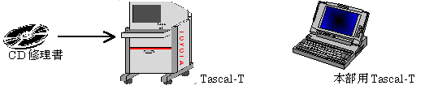
(2) Double -click the "My Computer" icon on the desktop
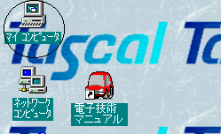
(3) Double -click the "E:" icon because it will be the "My Computer" screen.
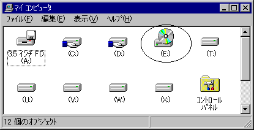
(4) Double -click the "Verup" icon because it will be the screen of "E:".
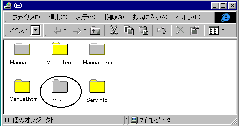
(5) Double -click the icon of the installation file because it will be the screen of "E: ￥ Verup".
Installation file name → S20v403.EXE
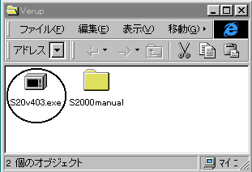
(6) The screen of "S2000 version upgrade Ver.*. **" is the screen, so make sure that it is "C:".
Click "OK"
(Note: Never click the "Refer" button)
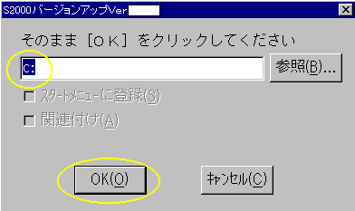
(7) Installation starts and completed automatically when the installation is completed.
(8) Double -click the "My Computer" icon on the desktop
[Note] There is already a shortcut icon of "S2000 related work" on the desktop
If it exists, you do not need to work (8) to (11).
(9) Double -click the "C:" icon because it will be the screen of "My Computer".
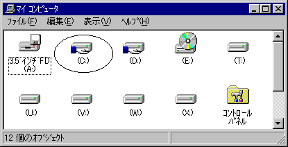
(10) Double -click the "S2000" icon because it will be the screen of "C:".
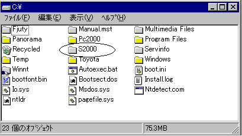
(11) Since the screen of "S2000" will be the "S2000 -related work" shortcut in it.
Move the icon to the desktop
(Drag the icon and release it on your desktop)
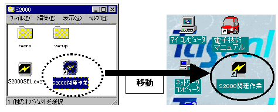
→ End of installation work
[Ⅱ]Version -up work
(1) Connect S2000 to the AC adapter
(2) TASCAL-T with a dedicated cable (used for PC2000 with a cable attached to Tascal-T)
And connect S2000
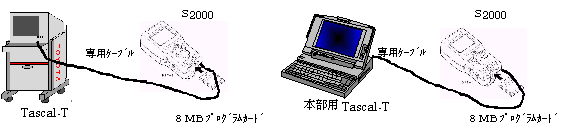
(3) Insert a 8M byte program card into S2000 and turn on the power supply SW of S2000.
(Label: blue, part number: 09991-60300)
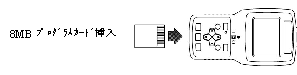
(4) Double -click the shortcut icon of "S2000 -related work" on the desktop
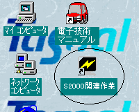
(5) Click "2. S2000 Card Version Up" because it will be the screen of "S2000 related work".
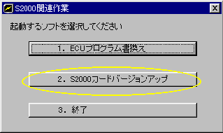
(6) Click "Download" because it will be the screen of the "S2000 version upgrade program"
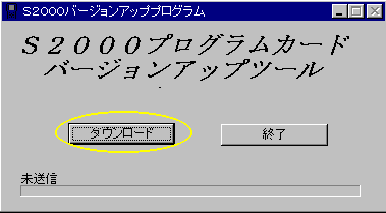
(7) Since the screen is on the following, check the contents carefully.
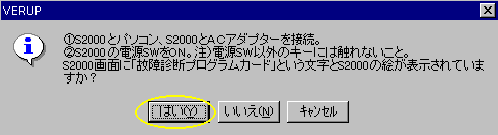
(8) If the S2000 screen is as follows, click "Yes"
* If the screen is not on the screen below, return the screen with the [Return] key or turn off the power SW once.
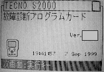
(9) The version upgrades will start and the burger will grow according to the progress.
"Time required"
When the previous version is upgraded (before start: Ver.T4.01) → Approximately 35 minutes
If the previous version has not been upgraded (before start: Ver.T4.00) → Approximately 39 minutes
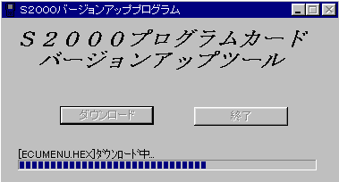
(10) When the version is upgraded, the buzzer sounds three times from S2000, and the following screen is displayed.
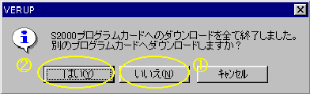
① If it ends, click "No" → To (11) at this time
② Click "Yes" if you want to upgrade another program card
→ At this time, after displaying the screen below, return to (6) by clicking "OK".
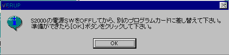
(11) Return to the screen of the "S2000 version upgrade program", click "End"
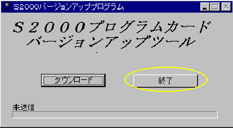
→ End of version upgrade work
[Ⅲ]How to check version upgrade
The version number on the initial screen displayed after launching the power supply of S2000
"" Ver.T4.03 If it is, the version upgrade has ended
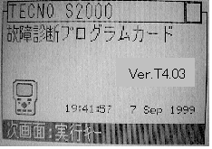